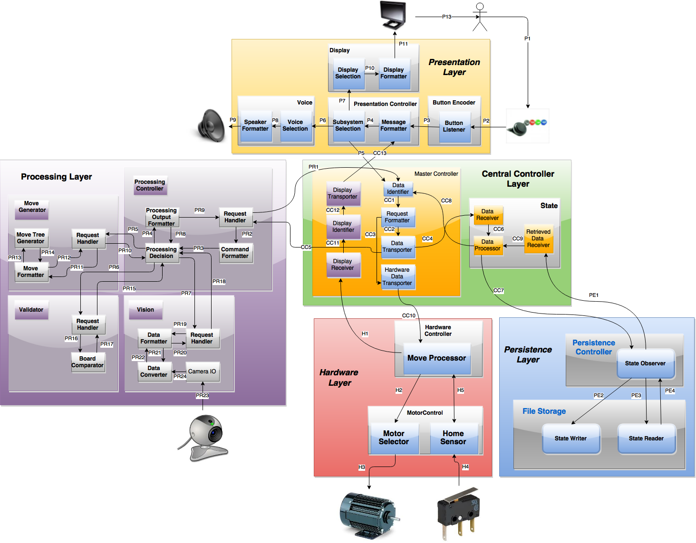

Description
The system uses a vision subsystem to determine the state of the board
and an Artificial Intelligent (AI) subsystem to determine which moves to make during the game. When
making a move, the robot arm is be able to move a piece to the correct square, jump over the human player’s
pieces,
remove captured pieces from the board, and crown the human player’s piece, as per the rules of the game. The
human
player is able to manually move their pieces, after which, the vision subsystem checks the state of the board,
verifying that the move was legal, and allowing the AI to determine the next move. The whole system was designed
to fit inside a 2' cube and was created with a budget of $800.
As the Chequers system is being used for demonstration purposes for the university, it was required to have a
polished look. The user interface includes voice recognition and speech.
Architecture
The Chequers System uses a five tier architecture approach. A detailed design follows, and below is a general
description of each of the five high level layers of the system.These layers include the Presentation Layer,
Central Controller Layer, Processing Layer,
Persistence Layer, and Hardware Layer.

Presentation Layer
The purpose of the Presentation Layer is to accept input from the end user and the Central Controller Layer and
provide entertainment to the end user through visual and auditory means. This layer will be the main source of
input from the end user, and it will provide up-to-date visual aid of the state of the game. Communication will
pass from this layer to the Central Controller Layer when the end user enters input into the system.
Central Controller Layer
The purpose of this layer is to accept messages from all other high level layers, relaying the messages to the
correct layer, and keeping track of the state of the game. This layer acts as an intermediary between the layers
of the architecture. The two subsystems of this layer, the Master Controller, and State will be briefly
described in the following subsections.
Processing Layer
The Processing Layer allows the Chequers system to perform all processing actions. It determines whether or not
a valid move has been made after getting the state of the board from the camera, and then generate a move for
the robotic arm. The vision is handled within the layer by use of the Open Source library OpenCV.
Persistence Layer
The Persistence layer will provide a means to persistently store and retrieve the game, board, and robot states
necessary to resume a game upon a software crash. It will be responsible for converting this data to the
appropriate format for storage, and for retrieval from storage. The two subsystems of this layer, the
Persistence Controller and File Storage, will be briefly described in the following subsections.
Hardware Layer
The purpose of the Hardware Layer is to accept input from the master controller, and convert the instructions
received into instructions for the movement of the robotic arm. The Hardware Layer is composed of two main
subsystems: the Hardware Controller subsystem and the Motor Controller subsystem.
Hardware
Raspberry Pi 2 B
The Raspberry Pi is the center of the system and is responsible for processing data acquired and sending
coordinates to the Iduino. I/O devices and other hardware devices will be connected to the Raspberry Pi,
allowing it to interact with the physical world.
Iduino Mega
The Iduino interfaces with the Raspberry Pi via USB cable. This interface from the Iduino to the Raspberry
Pi provides data about requested arm movement, such as the state of the current arm movement. The Iduino
also interfaces with the RAMPS for the movement of the robotic arm.
RepRap Arduino Mega Pololu Shield
The RAMPS interfaces directly with the stepper motor drivers and the Iduino. This interface allows the
Iduino to communicate with the stepper motor drivers. It interacts with the Iduino using the I/O pins.
DRV8825 Stepper Motor
The DRV8825 Stepper Motor drivers will interface with the stepper motors, giving them information, such as
direction, and number of step size they should move.